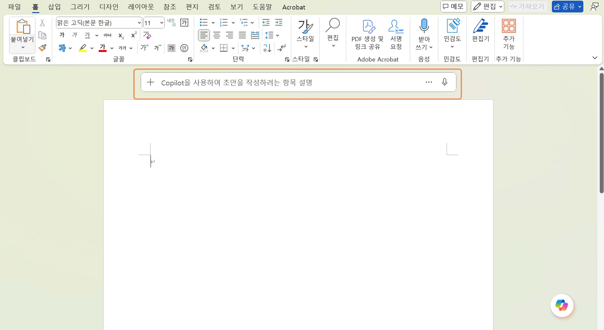
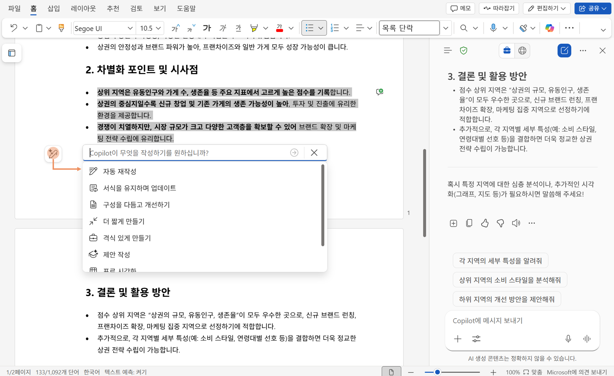

이번 퀘스트에서는 시장 분석, 식당의 기획 의도부터 메뉴까지 모든 것을 브랜드 기획서에 담아봅니다.

- Word을 실행하고, 새 문서를 선택하여 빈 페이지를 엽니다.
- 본문 영역의 Copilot 아이콘을 선택 또는 Alt+i 단축키로 프롬프트 입력창을 엽니다. 
- 아래의 샘플 프롬프트를 입력합니다. [대괄호]로 싸여 있는 부분을 취향에 따라 수정하십시오.
- [대괄호] 내용을 창의적으로 변경해보면서 마음에 들 때까지 다시 생성해 봅니다.
- 각 아젠다의 내용을 Word Copilot을 통해 새로 작성하거나, 일부 영역을 선택하여 수정할 수 있습니다. 원하는 내용을 프롬프트로 제공할 수도 있고, 기본 제공하는 메뉴를 선택하여 수정할 수 있습니다. 
- Copilot Chat과 대화를 통해 내용을 작성할 수 있습니다. 또는 대화 기록에서 컨텐츠를 가져올 수 있습니다.
Word뿐 아니라, 모든 Copilot Chat 대화기록을 확인하고, 이전 답변을 바로 "문서에 추가" 할 수 있습니다.
대화기록에서 생성한 이미지를 바로 문서에 추가하거나 Excel Copilot에서 만들었던 챠트도 바로 가져올 수 있습니다.
이전 단계에서 생성한 메뉴판 등의 이미지를 바로 추가하세요.

🚩 브랜드 기획서 템플릿 생성
내용을 종합하여 보고서 초안을 작성합니다. 아젠다를 제시하여 보고서의 템플릿에 맞게 작성합니다.
[샘플 프롬프트]
식당의 기획서를 작성하려고 해. 포함할 아젠다를 제안해줘.
다음 아젠다로 기획서 템플릿을 작성해줘. [1. 브랜드 개요, 2. 타겟 고객 분석, 3. 메뉴 및 서비스 구성, 4. 브랜드 아이덴티티, 5. 데이터 기반 마케팅 전략, 6. 목표 및 실행계획]
데이터 기반 마케팅 전략을 더 디테일하게 작성해줘. 아래 항목으로 구체화해줘. [1. 생존 예측, 2. 입지 선정 이유, 3. 경쟁 분석 및 차별화 전략]
🚩 기획서 컨텐츠 작성
각 아젠다의 세부 내용을 입력합니다.
[샘플 프롬프트]
(빈 영역에서 Copilot 아이콘 선택)브랜드 개요를 작성하고 싶어. 나의 가게는 (아이디어 설명) . (차별화 포인트)를 강조하는 브랜드 개요의 초안을 작성합니다. 전문적인 용어를 사용하고, 간결하게 작성합니다.
(작성된 내용의 일부를 선택 후 Copilot 아이콘 선택) 이 내용을 간결하게 요약하고, 글머리 기호로 다시 작성해줘.